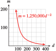

Subsection 3.2 Power Functions
The functions that describe direct and inverse variation are part of a larger family of functions called power functions.
Power Function.
A function of the form
where \(k\) and \(p\) are nonzero constants, is called a power function.
Examples of power functions are
In addition, the basic functions
which we studied in (((Unresolved xref, reference "chap2"; check spelling or use "provisional" attribute)))Â can be written as
Their graphs are shown below. Note that the domains of power functions with negative exponents do not include zero.

Example 3.2.6.
Which of the following are power functions?
\(f(x) = \dfrac{1}{3}x^4 + 2\)
\(g(x) = \dfrac{1}{3x^4}\)
\(h(x) = \dfrac{x + 6}{x^3}\)
This is not a power function, because of the addition of the constant term.
We can write \(g(x) = \frac{1}{3}x^{-4}\text{,}\) so \(g\) is a power function.
This is not a power function, but it can be treated as the sum of two power functions, because \(h(x) = x^{-2} + 6x^{-3}\text{.}\)
Checkpoint 3.2.7.
Write each function as a power function in the form \(y = kx ^p\text{.}\)
\(f(x) = \dfrac{12}{x^2}\)
\(g(x) = \dfrac{1}{4x}\)
\(h(x) = \dfrac{2}{5x^6}\)
\(f(x) = 12x^{-2}\)
\(g(x)=\dfrac{1}{4}x^{-1} \)
\(h(x)=\dfrac{2}{5}x^{-6} \)
Most applications are concerned with positive variables only, so many models use only the portion of the graph in the first quadrant.
Example 3.2.8.
In the Middle Ages in Europe, castles were built as defensive strongholds. An attacking force would build a huge catapult called a trebuchet to hurl rocks and scrap metal inside the castle walls. The engineers could adjust its range by varying the mass of the projectiles. The mass, \(m\text{,}\) of the projectile should be inversely proportional to the square of the distance, \(d\text{,}\) to the target.
Use a negative exponent to write \(m\) as a function of \(d\text{,}\) \(m = f (d)\text{.}\)
The engineers test the trebuchet with a \(20\)-kilogram projectile, which lands \(250\) meters away. Find the constant of proportionality; then rewrite your formula for \(m\text{.}\)
Graph \(m = f (d)\text{.}\)
The trebuchet is \(180\) meters from the courtyard within the castle. What size projectile will hit the target?
The attacking force would like to hurl a \(100\)-kilogram projectile at the castle. How close must the attackers bring their trebuchet?
If we use \(k\) for the constant of proportionality, then \(m = \dfrac{k}{d^2}\text{.}\) Rewriting this equation with a negative exponent gives \(m = kd^{-2}\text{.}\)
-
We substitute \(m = 20\) and \(d = 250\) to obtain
\begin{equation*} \begin{aligned}[t] 20 \amp = k(250)^{-2}\amp\amp \blert{\text{Multiply both sides by }250^2.}\\ 1,250,000 \amp = k \end{aligned} \end{equation*}Thus, \(m = 1,250,000 d^{-2}\text{.}\)
-
We evaluate the function for several values of \(m\text{,}\) or use a calculator to obtain the graph below.
 -
We substitute \(d = \alert{180}\) into the formula:
\begin{equation*} \begin{aligned}[t] m \amp = 1,250,000 (\alert{180} )^{-2} \\ \amp = \frac{1,250,000}{32,400} \\ \amp \approx 38.58 \end{aligned} \end{equation*}The attackers should use a mass of approximately \(38.6\) kilograms.
-
We substitute \(m=\alert{100}\) into the formula and solve for \(d\text{.}\)
\begin{equation*} \begin{aligned}[t] \alert{100} \amp = 1,250,000 d^{-2} \amp\amp \blert{\text{Multiply by }d^2.}\\ 100d^2 \amp = 1,250,000 \amp\amp \blert{\text{Divide by }100.}\\ d^2 \amp = 12,500 \amp\amp \blert{\text{Take sqwuare roots.}} \\ d \amp = \pm \sqrt{12,500} \end{aligned} \end{equation*}They must locate the trebuchet \(\sqrt{12,500}\approx 111.8\) meters from the castle.
The function \(m = \dfrac{k}{d^2}\) is an example of an inverse square law, because \(m\) varies inversely with the square of \(d\text{.}\) Such laws are fairly common in physics and its applications, because gravitational and other forces behave in this way. Here is a more modern example of an inverse square law.
Checkpoint 3.2.9.
Cell phone towers typically transmit signals at \(10\) watts of power. The signal strength varies inversely with the square of distance from the tower, and \(1\) kilometer away the signal strength is \(0.8\) picowatt. (A picowatt is \(10^{-12}\) watt.) Cell phones can receive a signal as small as \(0.01\) picowatt. How far can you be from the nearest tower and still hope to have cell phone reception?
About \(9\) km